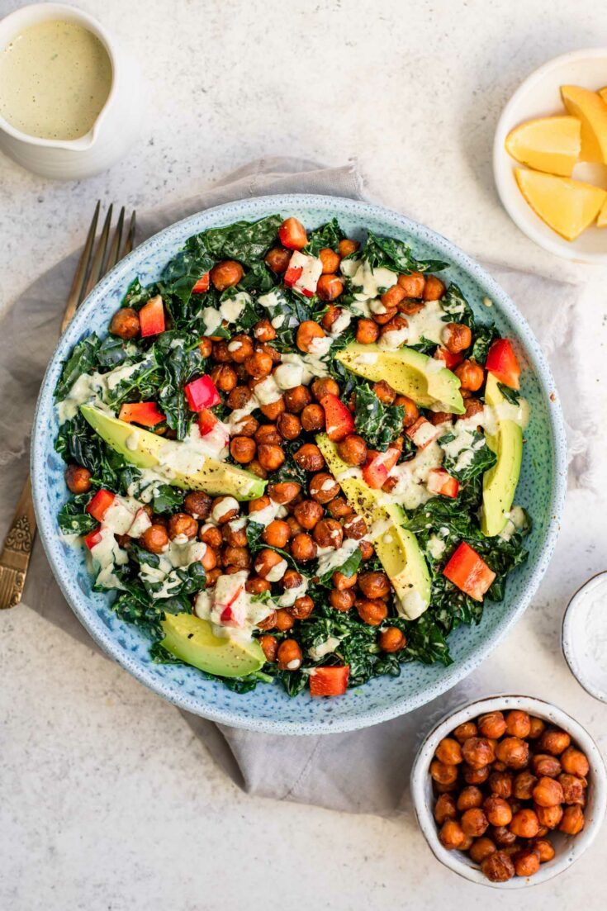

Kale Salad

Ingredients
- 2 bunches of kale
- Italian bread, chopped or ripped into crouton-sized pieces
- Dijon mustard
- Soy sauce
- Mayonnaise
- 1 can chickpeas
- Ranch seasoning
- Salt
- Pepper
- Garlic powder
- Olive oil
Steps
- Drain chickpeas and drizzle with ranch seasoning, salt, pepper, garlic powder, and olive oil. Bake @ 375 F for 8 minutes.
- Mix crouton-sized Italian bread bites with olive oil, garlic powder, salt, and pepper. Once chickpeas are done, add to baking sheet and bake both for ~10 more minutes.
- Mix mayo, soy sauce, and dijon mustard for a dressing (quantities are apparently up to you!)
- Massage kale with olive oil drizzle and assemble ingredients.